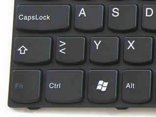
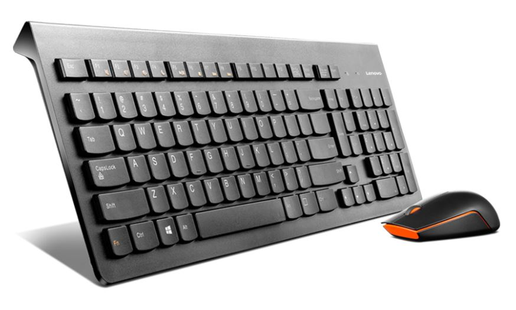
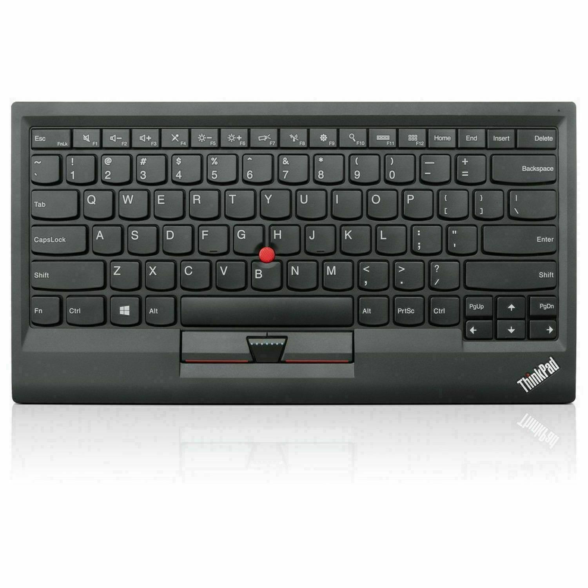

Примерно с осени 2014 года я живу и работаю на ноуте ThinkPad W530, у которого есть офигенная клавиатура и красная пипка™. Эти два фактора были решающими в вопросе выбора ноута «на несколько лет», купленного перед отъездом из России. В общем, с того момента прошло уже почти семь лет, руки к его клавиатуре сильно привыкли, а недавно я купил себе монитор, потому что на 15.6" экране ноута перестало помещаться всё то, что я хочу видеть одновременно во время работы.
Просто разложить ноут перед экраном — неудобно! К тому же, хочется использовать всё экранное пространство, что у меня есть, а это значит, что ноут должен быть где-то сбоку от монитора. Нужна клавиатура.
И, как оказалось, это проблема.
Я реально обошёл все магазины местной столицы, перепробовал все клавиатуры, что у них были в наличии. Высокий профиль не подходит: я на высоком профиле последний раз в амижные времена ещё долбил, с тех пор только низкопрофильные кнопки. Механику даже не смотрел: игровые девайсы стоят как-то негуманно, а собирать свой кастом я не готов. Среди низкопрофильных клавиатур абсолютно всё, что есть в наличии — какое-то редкостное фуфло. Где-то кнопки проваливаются, нет ощущения, что что-то нажал. Где-то раскладка восточноевропейская, а это значит, что левый нижний угол выглядит вот так (бедный шифт! Они убили Кенни!):

Более-менее приемлемые варианты нашлись среди офисных Dell и Logitech. Но у них проблема другая: компоновка левого
нижнего угла. Ctrl, Fn, Windows вместо привычного Fn, Ctrl, Windows. Вроде ерунда, можно переучиться, но
неохота. К тому же так далеко отставленный Ctrl неполезен для здоровья, RSI не дремлет. И вес у них у всех какой-то
рахитичный: не может хорошая полноформатная клавиатура весить меньше полкило минимум. Стал искать варианты в
интернете...
Оказалось, если я хочу Fn в углу, вариантов, окромя Lenovo, собственно, нету. Нашёл, где в РФ продают Lenovo 500
серии, заказал, привезли, вроде вот она, радость, ан нет. Всплыли моторные привычки, о которых в принципе не
задумываешься, когда мозгом выбираешь клавиатуру. Lenovo Wireless 500:

Такие вот неожиданные штуки выявились. Поживём-увидим, может быть, привыкну. Но удивил сам факт того, что есть вещи, которые мозгами не схватишь, даже целенаправленно думая на тему. Даже если ты клавиатурный задрот и зануда. Возможно, всё-таки нужно будет запариться и привезти в страну через друзей вот эту красавицу, полностью идентичную встроенной клавиатуре W530:

...Или пощупать где-нибудь настоящую механику и взять TEX Shinobi. Выглядит она просто восхитительно, перечисленные выше проблемы кроет, и стоит столько же.